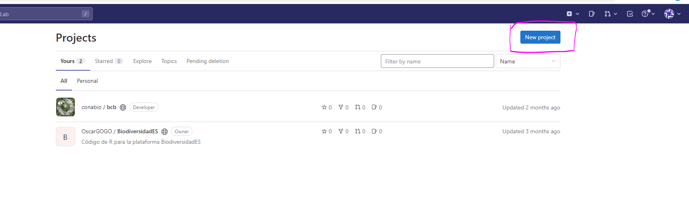
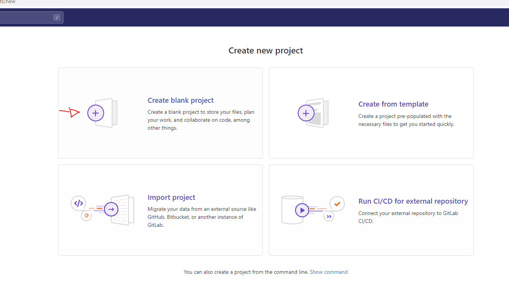
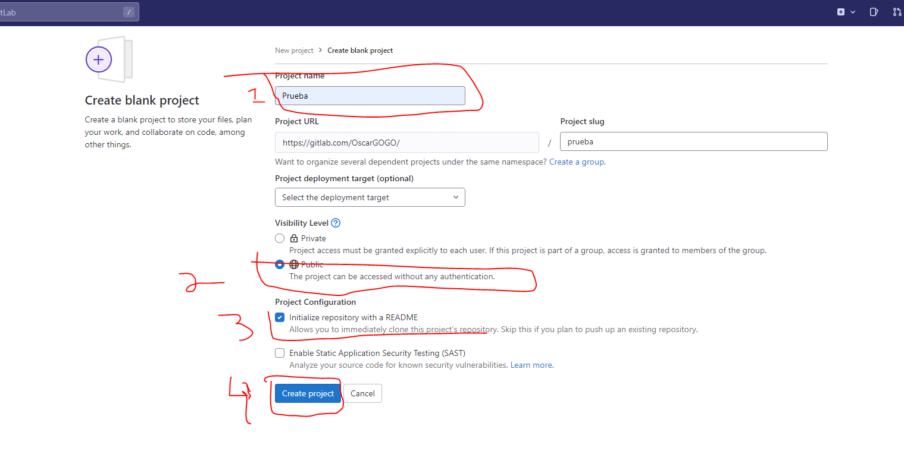
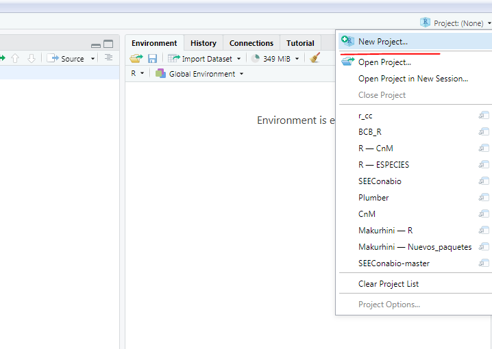
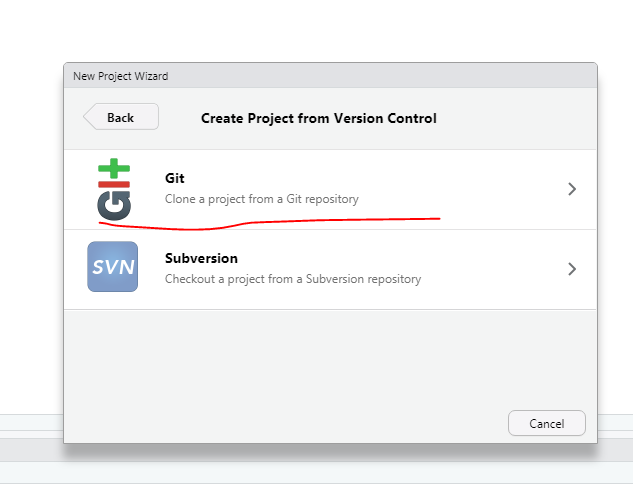
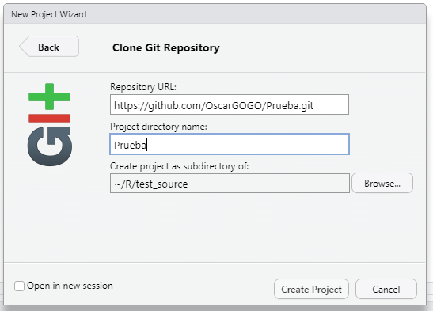
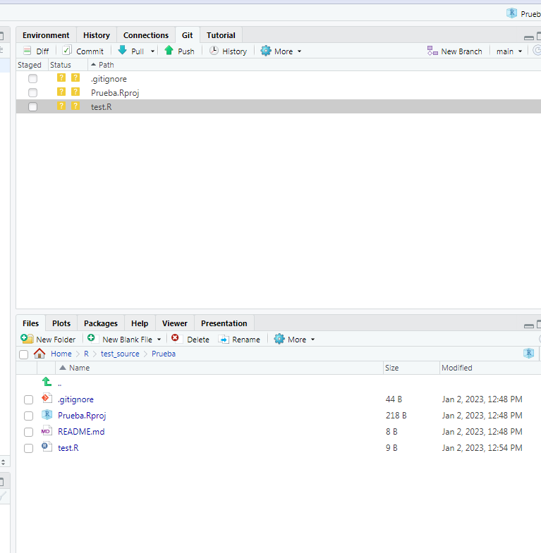
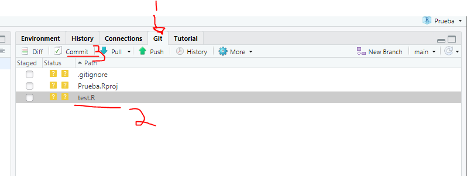
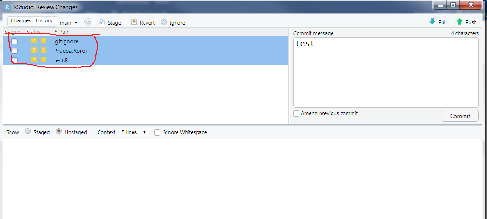
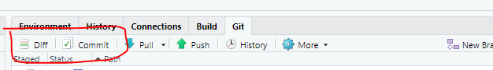

2 GitLab GitHub
2.1 Generar nuevo proyecto (GitLab) o repositorio (GitHub)
1. GitLab, crear nuevo repositorio.
 Paso 1. Crear nuevo repositorio en GitLab
2. Configurar proyecto o repositorio
Se deben considerar al menos 4 cosas:
Nombre (obligatorio)
Privacidad (obligatorio)
Readme (opcional)
Click crear :P
Paso 2. GitLab
2.2 Crear proyecto en RStudio
1. En GitLab o GitHub debes clonar el repositorio en tu maquina haciendo Click en clone
2. Copiar el código de SSH o HTTPS.
3. Abrir RStudio
4. Crear nuevo proyecto 
5. Seleccionar Version control
6. Seleccionar Git 
7. Pegar en Repository URL el código SSH o HTTPS de GitLab, dar un nombre y seleccionar subdirectorio 
Ver pestaña de Git
2.3 PUSH
1. Crear un nuevo archivo de R y colocar cualquier cosa, por ejemplo, crear el script de R test.R
Ver pestaña de Git
El archivo test.R aparece en la pestaña Git. Ahora daremos click en Commit

Se despliega una nueva ventana. Seleccionar los archivos que se buscan subir o actualizar en el repositorio de GitLab y marcar (Stage). Escribir un mensaje (Commit message) y hacer click en Push
Ver pestaña de Git
Ver pestaña de Git
Ver pestaña de Git
Ver pestaña de Git
2.4 PULL
1. Abrimos el repositorio de GitLab 2. Editamos el archivo test.R
Seleccionar editor y dar click
Agregamos algún comando o texto
3. Hacemos un comentario en Commit messages y damos click en Commit changes
4. Regresamos a nuestro proyecto en RStudio y buscamos nuestra ventana con la pestaña Git que por lo general es la superior derecha.
5. Damos click en Pull
6. Podemos ver los cambios haciendo click en Diff o en Commit seguido de Changes:
